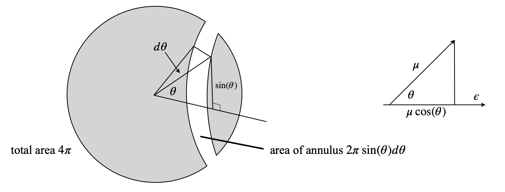

Questions 49 - 72¶
Q49¶
(a) Find the coordinates of the centroid \(M_x\) and \(M_y\) and average \(x\) and \(y\) of the first quadrant of a circle whose equation is \(r^2 = x^2 + y^2\), \(r\) being the radius.
(b) Find the centroids of the enclosed area between the circle in (a) and \(g = x^2\).
Strategy: Use equations 31 and 33 to calculate the centroids; the averages are given by equation 35.
Q50¶
(a) Find the mass and centre of gravity measured from the flat side of a quartz ‘fish-eye’ lens of uniform density \(\rho_0\) which has a parabolic profile on one side and is plain on the other. The equation of the parabola is \(y = \sqrt{ax}\) where \(a\) is a constant and the lens is \(h\) cm thick.
(b) Subsequent experiments show that better results are obtained if the lens is next made from gradient index glass with density changing as \(\rho(x) = \rho_0(1 + bx^2)\), where \(b\) is a constant. What effect does this have on the centre of gravity?
Figure 18. Sketch for Q50.
Q51¶
Calculate the volume and surface area formed from the hyperbola \(y = 1/x\) from \(x = 1 \to \infty\). The shape of the volume produced is sometimes called Gabriel’s horn. The volume is obtained by calculating the area of a disc and integrating along \(x\). The surface area S is obtained by calculating the circumference of a circle \(2\pi y\) at position \(x\) then integrating along the whole arc, which has a length element \(\displaystyle ds =\sqrt{1+y'^2}dx, \quad S=\int_a^b2\pi y ds \) and \(y'\) is the derivative. Comment on the surface area with respect to the volume. Does this make sense ?
Figure 19. The arc length \(ds\) is, by Pythagoras’ theorem, \(ds^2 = dx^2 + dy^2\), which by dividing by \(dx^2\) can be rearranged into \(ds =\sqrt{1 + y'^2}dx\).
Q52¶
In the study of the sequence of base pairs in DNA (Perkus 2001), the occurrence of overlapping sequences of base pairs (clones) can be estimated statistically. The probability of a clone starting at a given site is \(p\) and \(x\) is its position along the DNA chain, taken to be a continuous variable.
(a) Evaluate \(\displaystyle F=\frac{d}{dp}\int_a^b e^{-px}dx\) by integrating first then differentiating the result, then doing the calculation in reverse order.
(b) Do the same with \(\displaystyle F =\frac{d}{dp}\ln\left( \int_a^b e^{-px}dx \right)\) and show that this is the average \(\langle x \rangle\) of the exponential distribution \(e^{-px}\).
Strategy: Note that, by the way the equations are written, the parameter \(p\) is not a variable of the integration and is therefore a constant. In (b) treat the integral as you would any other function.
Q53¶
Evaluate \(\displaystyle \frac{\partial}{\partial \alpha}\ln\left(\int e^{-E_{\alpha,x}}dx \right)\) where \(E_{\alpha x}=\alpha x^2\)
Strategy: The integral is a function of \(x\), but contains \(\alpha\) so differentiate first. This is very similar to part (b) of the previous question. Sympy is helpful in obtaining the individual integrals that are also standard.
Q54¶
The probability distribution (or probability density) describing the chance that a molecule has energy in range \(E \to E + dE\) is given by the Boltzmann equation \(\displaystyle P(E)dE=e^{-E/k_BT}dE\) where \(T\) is the temperature in K, and \(k_B\) Boltzmann’s constant = \(1.38 \cdot 10^{-23} \,\mathrm{J \,K^{-1}}\) and \(E \ge 0\).
(a) Calculate the average energy \(\langle E\rangle\) and the mean square energy \(\langle E^2\rangle\) for an ensemble of \(N\) molecules.
(b) Calculate also the dispersion \(\sigma_E^2 = \langle E^2\rangle -\langle E\rangle^2\) and comment on the size of the ratio \(\sigma_E/\langle E\rangle\).
Q55¶
(a) Calculate \(\displaystyle \frac{d}{dT}\int f(x,T)dx\).
(b) The slope of the log of the rate constant \(k(T)\) vs. \(1/T\) is used to measure the activation energy \(E_a\) of a chemical reaction. The slope is \(\displaystyle \frac{d\ln(k(T)}{d{1/T}}=-\frac{E_a}{k_B}\). Show that this is \(\displaystyle \frac{dk(T)}{d{T}}=\frac{E_ak(T)}{k_BT^2}\).
(c Collision theory defines the rate constant as
where \(\sigma (E)\) is the reaction cross section at energy \(E\) which is the relative kinetic energy of the reacting species. Calculate \(E_a\) using the result of (b) and explain what each of the terms represents.
(d) Calculate \(E_a\) if the cross-section varies as predicted by the line of centres geometrical model of collisions where \(\sigma (E) = \pi d^2(1 - E_0/E)\) above the threshold energy \(E_0\) and is zero below this. The sum of molecular radii on collision is \(d\). While the integration is straightforward, use Sympy to obtain the result and make \(E_0\) the lower range of the integration.
Q56¶
In Q47, a plot of the Maxwell-Boltzmann distribution was used to illustrate the probability \(P(u)\) of a gaseous molecule having a speed \(u \to u + du\) where,
(a) Calculate the average speed \(\langle u \rangle\) and the root mean square speed (rms) speed \(\sqrt{\langle u^2 \rangle }\).
(b) Rewrite the probability \(P(u)\) in terms of the kinetic energy \(E = \frac{1}{2}mu^2\) by replacing \(P(u)du\) with \(P(E)dE\) in your equations, i.e. substitute for \(u\) and use \(du = dE/(2mE)^{1/2}\).
(c) Calculate \(\langle E \rangle\) and \(\langle E^2 \rangle\) using the fact that the heat capacity \(\displaystyle C_V = \frac{\partial〈E〉}{\partial T}\) show that \( \sigma_E^2 = k_BT^2C_V\) where \(\sigma^2\) is the variance, equation 26.
(d) Using \(C_V\), calculate the ratio \(\sigma_E/\langle E \rangle\).
Strategy: This is the type of question that requires direct application of the formulas; use Sympy when integration involves square roots and/or terms with \(e^{-x^2}\).
Q57¶
A harmonic oscillator, such as a vibrating spring or a diatomic molecule, has potential energy given by \(E_x = 0.5kx^2\) where \(x\) is the extension from the equilibrium length at \(x = 0\) and therefore \(x\) can be both positive and negative; see Figure 38 (see solutions). The average energy is \(k_BT\).
(a) Calculate the average\(\langle x \rangle\) and mean square displacement \(\langle x^2 \rangle\). Calculate the variance in position. Explain what you understand by \(\sqrt{\langle x^2 \rangle}\).
(b) The frequency \(\nu\) of a molecule’s vibration (in s\(^{-1}\)) is related to the reduced mass \(\mu\) and the force constant \(k\) by \(\displaystyle \nu=\frac{1}{2\pi}\sqrt{\frac{k}{\mu}}\). The force constant for \(\mathrm{I_2}\) is \(173\,\mathrm{ N \,m^{-1}}\) and the equilibrium bond length 267 pm. The vibrational frequency is \(\approx 213 \,\mathrm{cm^{-1}}\). Calculate and comment on the magnitude of the root mean square displacement, \(\sqrt{\langle x^2 \rangle}\) vs. the equilibrium bond length.
Q58¶
The displacement at time \(t\) of a classical harmonic oscillator is \(x = x_0 \cos(\omega t)\) where \(\omega\) is the frequency and \(x_0\) the maximum amplitude.
(a) Find the probability \(P(x)dx\) of being at position \(x \to x + dx\) during the motion, this being proportional to the time taken to move by \(dx\).
(b) Show that the distribution is normalized even though it is infinite at two places.
(c) Calculate \(\sqrt{\langle x \rangle}\) and \(\sqrt{\langle x^2 \rangle}\) using this distribution.
Strategy: Assume that the time to move a distance \(dx\) is proportional to the time \(dt\) taken to do so. Therefore find \(dx/dt\) and convert the sine (using Pythagoras) into a function in \(x\). The period of oscillation is \(T = 1/\nu = 2\pi/\omega\).
Q59¶
In the previous problem \(\langle x \rangle\) and \(\langle x^2 \rangle\) were calculated for a classical harmonic oscillator. In this problem, the same calculation is done quantum mechanically. The vibrational wavefunction of a harmonic oscillator for the n = 0, 1, 2, and 3 quantum numbers are given in Q39. The probability distribution of the nuclei being at a position between \(x\) and \(x + dx\) is \(\psi^*\psi dx\).
(a) Determine the equations and then calculate \(\langle x \rangle\) and \(\langle x^2 \rangle\) for each vibrational level.
(b) By induction find a general formula for \(\langle x^2 \rangle\) that depends upon \(n\) the vibrational quantum number. Find this also in terms of the energy and compare it with the classical value of the previous example.
(c) Using the data below, plot the wavefunctions and the potential energy curve on the same graph, placing the wavefunction at the appropriate energy. To produce a realistic figure, use the data for CO, which is \(r_e = 113\) pm and \(\omega_e = 2170.2 \,\mathrm{cm^{-1}}\).
(d) Explain the result you obtain for \(\langle x \rangle\), which is easy, and that for \(\langle x^2 \rangle\), which is harder. You need to consider the shape of the wavefunctions.
(e) Calculate the mean momentum \(\langle p \rangle\) and \(\langle p^2 \rangle\) and confirm the uncertainty principle as \(\sqrt{\langle p^2 \rangle}\sqrt{\langle x^2 \rangle} \ge \hbar/2\).
The energy of a vibration is \(E_n = h\nu(n + 1/2)\) where \(\nu\) is the vibrational frequency in s\(^{-1}\) and \(n\) the quantum number. The formula to relate force constant to the vibrational frequency is given in Q57. The quantum operator for momentum is \(\displaystyle -i\hbar\frac{d}{dx}\).
Strategy: Although this is a long question, it is easily split into manageable parts. The equation to use is 28 for part (a) and 38 for the momentum in part (e). Equation 38 is used because the momentum operator acts on the wavefunction \(\psi\) before this is multiplied by \(\psi^*\) (the complex conjugate of \(\psi\)) and integrated. When the operator is \(x\) or \(x^2\) multiplying \(\psi,\,\psi^*\) and \(x\) in any order makes no difference to the result and we can use equation 28. This is not true for the momentum operator where order does matter.
In calculating \(\langle x \rangle\) it is sufficient to look up the equations for the wavefunctions and study their odd or even symmetry. Determine which ones are even \(\psi (-x) = \psi(x)\) and which odd \(\psi(-x) = -\psi(x)\). No integration is needed. The wavefunctions are normalized, therefore the denominator in the equations 28 and 38 is unity. (You may need to multiply the wavefunction by a very small number to be able to plot on the same scale as the potential.)
Q60¶
The vibrational properties of a molecule can be described by several classical harmonic oscillators. If the zero of energy is placed at the zero-point energy, then the probability distribution of \(s\) independent classical harmonic oscillators having total energy \(E\) distributed among them is given by \(\displaystyle P(E)dE=\frac{\beta}{(s-1)!}\left(\beta E \right)^{s-1}e^{-\beta E}dE\) where \(\beta = 1/k_BT\) and \(k_B\) is the Boltzmann constant and \(T\) the temperature. This equation is, of course, not such an accurate model for every molecule but if the vibrational energies are small compared to \(k_BT\) then it is a good approximation.
(a) The distribution P(E) has the same form as a well know distribution. What is this called, and under what assumptions is it valid? Show that the distribution is normalized.
(b) Calculate the average energy \(\langle E \rangle\) and \(\langle E^2 \rangle\) and the standard deviation or width of the energy distribution.
(c) Plot the distribution \(P(E)\) vs \(E\) for 10 and 50 oscillators with \(\beta = 1/200 \,\mathrm{(cm^{-1})^{-1}}\) and energy up to \(20 000\,\mathrm{cm^{-1}}\), and confirm that the average energies are correct. This value of \(\beta\) is approximately that at room temperature.
Strategy: Equation 28 gives the formula for an average. Use Sympy to perform the calculation or use the table for the general integration result. A gamma function is produced in the result. It is useful to know that if \(s\) is a positive integer \(\Gamma(s + 1) = s!\) See chapter 13 for the distribution.
Q61¶
The particle in a box wavefunction is \(\psi_n(x) = N_n \sin(n\pi x/L)\), where \(N_n\) is the normalization and \(L\) the length of the box and \(n\) the quantum number which has values \(n = 1, \,2, \,3, \cdots\). The wavefunction is defined from \(0 lt x \lt L\) and is zero outside these limits.
(a) Calculate the normalization constant and
(b) \(\langle x \rangle\) and \(\langle x^2 \rangle\) and \(\sigma_x^2\) where \(\sigma_x^2\) = \(\langle x^2 \rangle\) - \(\langle x \rangle^2\) for different \(n\).
Q62¶
Calculate the values of the electronic energy levels of a molecule represented as a particle in a box of length \(L\) using the wavefunctions from the previous example. The Hamiltonian operator contains only the kinetic energy part as the potential energy is zero. The kinetic energy operator is \(\displaystyle -\frac{\hbar^2}{2m}\frac{d^2}{dx^2}\) where \(m\) is the mass of the particle in this case an electron.
Strategy: Use equation 38 and place the operator after the first wavefunction. Differentiate twice and then integrate. The wavefunctions are normalized so that the denominator in 38 is units and can be ignored and the equation becomes 39.
Q63*¶
Using the normalized particle in a box wavefunctions in the previous problem, calculate the intensity of each of the four electronic absorption transitions in octatetraene originating from the HOMO orbital. Assume that the octatetraene’s energy levels can be described by such a simple model and that the transition dipole leading to absorption is \(\mu = q(x - L/2)\) where \(q\) is the charge on the electron. The absorption probability is \(|\langle \mu \rangle |^2\) , which is the square of the absolute value of the expectation value \(\mu\). The intensity of the transition between the lower level with quantum number \(n\) and an upper level with number \(k\) is \(A_{n,k}=\beta \nu_{n,k} |\langle \mu \rangle |^2 \, \mathrm{dm^2\,mol^{-1}\,cm^{-1}} \) and where \(\nu_{n,k}\) is the transition frequency and \(\beta=8\pi^3N/(3000hc)\). Calculate the absorption spectrum if the molecule has a length \(7 \times 1.40\) Angstrom.
Strategy: Draw out the energy levels using the energy from the previous question if you want to do this accurately. Octatetraene has eight \(\pi\) electrons and eight orbitals are required. The lowest energy transition must be from \(n = 4 \to 5\) and the others to levels \(6, \,7\), and \(8\). The expectation value is equation 38 with operator \(Q \equiv \mu = q(x - L/2)\). As the wavefunctions are normalized the denominator in this equation is unity and there is no need to calculate it. A particular transition frequency can be calculated from the difference in energy levels.
Q64¶
In electronic spectroscopy an electron is excited from the ground state to one of several excited states but often only to the lowest. These transitions produce the familiar colours we see from the artificial dyes used in our clothes and paints, natural dyes in food and the green colour of leaves (chlorophyll) and varied colours of flowers. Franck-Condon (FC) factors determine the intensity of the vibrational part of these electronic spectra and hence largely their colour, and are the square of the absolute amount by which two vibrational wavefunctions overlap with one another. The probability of absorbing a photon is proportional to the Franck-Condon integral
where \(\psi_{a,n}(x - x_a)\) is the vibrational wavefunction of state \(a\), with quantum number \(n\), and similarly \(\psi_{b,m}(x - x_a)\) for the other state. The coordinate of the \(a\) and the \(b\) wavefunction is different because they are in different electronic states; \(x_a\) and \(x_b\) are the equilibrium internuclear separation of each of the states. Because they belong to different states, the wavefunctions \(\psi_a\) and \(\psi_b\) are not orthogonal to one another and the Franck–Condon integral is not identically zero. The general normalized wavefunctions for the harmonic oscillator are (see Fig. 48 of the solutions for a sketch)
where \(H_n(z)\) is the Hermite polynomial with quantum number \(n\) and argument \(z\). The constant \(\alpha =\sqrt{ mk/\hbar^2}\) , where \(k\) is the force constant (units N m\(^{-1}\)) of the vibration and \(m\) the mass.
(a) What does it mean if two wavefunctions are not orthogonal?
(b) Use Sympy or otherwise to calculate the first few Hermite polynomials and check a few wavefunctions with those in Q39.
(c) Calculate the Franck–Condon factors originating from the \(n = 0\) state of a diatomic molecule to the \(m^th\) vibrational level of one of its excited electronic states. Use Sympy to perform the integrations and show by induction, i.e. by trying several values of \(m\) and generalizing the result, that \(\displaystyle F_{0,m}=\bigg|\langle 0 |m\rangle \bigg|^2 = \frac{X^m}{2^mM!}e^{-X/2}\) where \(X = \alpha(x_n - x_m)^2\) is the dimensionless displacement between the two electronic states. What are the units of \(\alpha\) if \(X\) is dimensionless?
(d) Plot the FC factors with quantum numbers from \(0 \to 10\) and with reduced displacement \(X = 1\) and \(5\). Comment on the shape of the graph as the displacement increases.
(e) Using values for CO ground state of \(x_a =112.81\) pm , \(/nu_a = 2170.2\,\mathrm{ cm^{-1}}\) and the \(X\) electronic excited state \(x_b =1.23.5\) pm, \(\nu_b = 1515.6\,\mathrm{ cm^{-1}}\) calculate the spectrum from the \(n = 0\) level of the ground state. The \(n = 0 \to m = 0\) electronic energy gap is \(64746.5 \,\mathrm{ cm^{-1}}\). You only need to go to \(m = 10\) in the excited state.
Strategy: (a) Look up how to define Hermite polynomials, and generate some using well known recursion formulae.(b) Use the equation given for the wavefunction and list it with \(n = 0\) and \(m = 0, \,1,\, 2\), and so forth. Before calculating a FC factor simplify the calculation by removing the constants to outside the integration and substituting for the \(n = 0\) wavefunction. Calculate the remaining integral and construct the FC factors by multiplying with the constants. (c) Use the numerical values given to calculate actual values for the Franck–Condon factors. Plot a stick graph where the x values are the transition energies and y values are the Franck–Condon factors.
Q65¶
The process of Forster or dipole-dipole energy transfer from an excited donor D* to an acceptor A is described by the equation \(\mathrm {D^* + A}\overset{k_R}\to \mathrm{D + A^*}\). The donor excited state is quenched and its fluorescence is reduced in intensity; conversely the acceptor emission is stimulated. The acceptor emission is usually fluorescence but could be phosphorescence if A is a triplet state of a molecule. The Forster transfer process forms the basis of the FRET techniques now widely used in the biosciences to estimate distances between pairs of chromophores on proteins, DNA or membranes. FRET is a mnemonic for fluorescence, resonance energy transfer. This energy transfer competes with fluorescence; \(\mathrm{D^*}\underset{kf}{\stackrel{h\nu}\longrightarrow } \mathrm{D}\) which has a rate constant \(k_f\).
In solution, the rate constant of energy transfer is not constant but varies with time. This happens because of the \(R^{-6}\) dependence of the transfer rate upon separation, \(R\), of the donor to its surrounding and randomly positioned acceptors. Integrating over all these distances, the intensity of the fluorescence emitted by a donor molecule is given by \(\displaystyle I(t)=I_0\exp\left(-k_t t-\frac{c}{c_0}\sqrt{\pi k_f t}\right)\), where c the concentration of acceptor molecules \(c_0 = 3\pi N/4R_0^3\) is a constant and \(R_0\) is the characteristic energy transfer distance between donor and acceptor. This is a measure of the overlap of the donor’s emission with the acceptor’s absorption spectrum. Experimental measurements confirm this theoretical expression.
Calculate the relative yield, \(\phi/\phi_0\), which is the ratio of fluorescence yield at zero quencher, \(\phi_0\), with that at a quencher concentration \(c\). A fluorescence yield is the total amount of fluorescence emitted over all time. Plot the resulting graph after making the substitution \(\displaystyle x =\frac{c\sqrt{\pi}}{2c_0}\) in the result. By definition, the relative fluorescence yield is the ratio of integrals
where the denominator is the total emission when the quencher concentration is zero.
Q66¶
In Q65 the following expression is found and has to be evaluated when \(x\) is large, \(\displaystyle \frac{\phi}{\phi_0}=1-x\sqrt{\pi}\left( 1-\mathrm{erf}(x) \right)e^{x^2}\). Use L’Hopital’s rule to evaluate this when \(x \to \infty\) and show that it tends to zero.
Q67¶
Direct spin-spin coupling is observed in solid-state NMR spectroscopy but not in solution. The direct spin-spin coupling between two nuclear spin magnetic moments is dependent on the square of the cosine of the angle between them, the effect being proportional to \(\displaystyle \frac{3\cos^2(\theta)-1}{r^3}\) where \(r\) is the separation of the spins. Show that the effect of averaging over all angles due to the rotational motion in solution makes the effective coupling zero, i.e. that \(\displaystyle \frac{3\cos^2(\theta)-1}{r^3}=0\).
Strategy: If the coupling is zero then it must follow that after averaging over both polar and azimuthal angles \(\langle \cos^2(\theta)\rangle = 1/3\) because then \( \langle 3\cos^2(\theta) -1\rangle \equiv \langle 3\cos^2(\theta) \rangle-1=0\). To average over angles the area element \(\sin(\theta)d\theta d\phi\) is used and the average is not only over the polar angle \(\theta\) but also ‘around the equator’ with the azimuthal angle \(\phi\) to allow for all possible motions. Again use equation 28. It is always necessary in three-dimensional problems such as this, to average over both angles defining a point, i.e. the polar and azimuthal, even though only one is present in the formula. This is a three-dimensional problem because the molecule whose NMR spectrum is measured will undergo rotational diffusion in solution.
Q68¶
The wavefunction of the 1s state of a hydrogenic atom in spherical polar coordinates is \(\displaystyle \psi(r,\theta,\phi)=\frac{1}{\sqrt{\pi}}\left(\frac{Z}{a_0}\right)^{3/2}e^{-Zr/a_0}\), where \(r\) is the radial distance from the nucleus, \(a_0\) is the Bohr radius, 52.9 pm, and \(Z\) is the atomic number of the hydrogenic atom, 1 for H, 2 for He\(^{+}\), 3 for Li\(^{2+}\), and so forth.
(a) Show that the radial distribution of this 1s wavefunction is normalized. (It is necessary to integrate over all angles as well as \(r\).)
(b) Show that \(\langle 1/r \rangle = Z/a_0\) and then calculate \(\langle 1/r^2\rangle ,\,\langle 1/r^3 \rangle,\, \langle 1 \rangle,\, \langle r \rangle \), and \(\langle r^2\rangle \). Next use Sympy to find \(\langle r^n \rangle \) and show that the general formula produces the previous results.
(c) Calculate the standard deviation of the electron probability distribution.
(d) Calculate the probability that that the electron is within \(a_0\) of the nucleus. How does this change as \(Z\) increases and why? You may wish to plot the function.
Strategy: The radial parts of the wavefunctions are only normalized when multiplied by \(r^2\); the radial distribution part is therefore \(\int_0^\infty\psi^*\psi r^2dr\). The total wavefunction also has angular parts described by a polar angle \(\theta\), which is integrated from \(0 \to \pi\) and an azimuthal or ‘round the equator’ angle \(\phi\), which ranges from \(0 \to 2\pi\). The normalizing equation, as proved in your textbook, is the product of three integrals
The volume element for integrating over all coordinates \(r,\, \theta, \, \phi\) is \(r^2\sin(\theta)drd\theta d\phi\). However, as there are no terms in products \(r\theta\), ,\theta\phi\(, or \)r\phi\(, such as \)\sin(r\thete)$, this allows the integral to be separated into three parts;
In part (b) of the question the average is the same as \(\langle 1 \rangle= \langle r^0 \rangle \) and is just the normalization term.
Q69¶
A solution of molecules each of which has a dipole \(\mu\) is placed in a cuvette across which an electric field of strength \(\epsilon\) is applied. Each molecule experiences a torque tending to align it with the direction of the field. However, the alignment is far from complete, because random thermal (Brownian) motion causes the solvent molecules to collide with the dipolar ones and randomizes their orientation.
The interaction energy of a dipole with the electric field is \(E_\theta = -\epsilon\mu\cos(\theta)\) where \(\theta\) is the angle between the dipole and the field. The Boltzmann distribution of orientational energies is \(\displaystyle W(E_\theta)dE_\theta =e^{-E_\theta /k_BT}dE_\theta \).
The angular distribution of molecules over the angular range angle \(\theta \to \theta + d\theta\) is \(2\pi \sin(\theta)W(E_\theta)d\theta\) on a sphere of unit radius. Note that the azimuthal (round the equator) angle is already included as \(2\pi\) in the angular distribution.
If there are \(N\) dipoles, then the fraction that lie in the angular range \(\theta \to \theta + d\theta\) is just \(N/4\pi\) times this quantity because the total surface area of the unit sphere is \(4\pi\), therefore the fraction at angle \(\theta\) is \(P(\theta)d\theta = (N/2) \sin(\theta)W(E_\theta)d\theta\). The calculation is shown in the left-hand part of Fig. 20.

Figure 20. Left: A sphere and the solid angle area element. Right: The projection of the dipole onto the field \(\epsilon\), which has the value \(\mu\cos(\theta)\) and therefore the dipole energy is \(E_\theta = -\epsilon \mu \cos(\theta) \).
(a) Calculate the average energy of the dipole \(\langle E \rangle\) in the field \(\epsilon\) by averaging over all \(\theta\) angles, \(0 \to \pi\) radians. Simplify the result.
(b) Assume that \(\epsilon\mu/k_BT\ll 1\) ,which is usually the case, and show that \(\langle E \rangle\) is proportional to \((\mu\epsilon)^2/3k_BT\). Explain whether this result makes physical sense. (Hint: expand the exponentials \(e^x \sim 1 + x + x^2/2! + \cdots\) when \(x \lt 1\). Calculate \(\langle E \rangle\) at large field and again comment on the result.
(c Calculate \(\langle E^2 \rangle\) and using the fact that the heat capacity \(C_V=\partial \langle E\rangle /\partial T\), and by assuming that \(\epsilon\mu/k_BT \ll 1\) only after calculating \(C_V\), show that \(\sigma_E^2 = k_BT^2C_V\) where \(\sigma_E^2 = \langle E^2 \rangle-\langle E \rangle^2\).
(d) Calculate \(\sigma_E^2 = \langle E^2 \rangle -\langle E \rangle^2 \) at large field strength or low temperatures when \(\epsilon\mu/k_BT \gg 1\).
Strategy: Use the standard equation where the variable for integration is the angle \(\theta\). You are given the fraction or probability in the question. The denominator in equation 28 is not unity.
Q70¶
The rotational energy \(E_J\) of a molecule assumed to behave as a rigid rotor depends upon the quantum number \(J\) as \(E_J = BJ(J + 1)\). \(B\) is the rotational constant and \(J\) has values \(0, \,1,\, 2, \,3, \cdots\) The rotational constant depends upon the average bond length \(r\) of the molecule and its reduced mass \(\mu\) as \(\displaystyle B=\frac{\hbar^2}{2\mu r^2}=\frac{\hbar^2}{2I}\), where \(I\) is the moment of inertia. The probability distribution describing the chance of a molecule having energy \(E\), is obtained from the Boltzmann equation \(P(E_J)dE_J = g_J e^{-E_J/k_BT}dE_J\) where T is the temperature (K), \(k_B\) Boltzmann’s constant (\(1.38 \cdot 10^{-23}\,\mathrm{ JK^{-1}}\)), and \(g_J\) is the degeneracy of level \(J\); in this case this is \(2J + 1\).
(a) Calculate the average rotational quantum number at temperature T and, by assuming that \(B < k_BT\), which, except for hydrogen and other light molecules is always true, simplify your result. Assume that \(J\); is a continuous variable that can be integrated. Use Maple to approximate the error function produced. Plot the distribution for \(^{79}\mathrm{Br_2}\) at \(30, \,300\), and \(600\) K. The equilibrium bond length is \(228\) pm.
(b) Calculate the average \(J\) quantum number and by differentiation of \(P\) the quantum number at the maximum of \(P\). Explain your results in physical terms.
Note that the rotational constant is more properly defined as \(\displaystyle B=\frac{\hbar^2}{2\mu}\left\langle \frac{1}{r^2}\right\rangle\) than \(\displaystyle B=\frac{\hbar^2}{2\mu r^2}\)
Q71¶
The partition function \(Z\) of an atomic or molecular ensemble is the sum of the terms in a Boltzmann distribution and is used to calculate the fraction of the total number of particles in any given energy level \(i\), which is \(n_i /Z\). The translational quanta for a molecule are so small that the summation can be replaced by integration. If \(g(\epsilon)\) is the degeneracy of the energy levels at energy \(\epsilon\) then
and for translational motion \(\displaystyle g(\epsilon) =\frac{4\pi\sqrt{2\epsilon \,m^3}}{\hbar^3}V\) where \(m\) is the particle’s mass and \(V\) the volume of the container. Calculate \(Z\).
Strategy: Integrations with exponentials multiplied by fractional powers of \(x\) are usually not able to be integrated directly, but produce instead a result that is another function such as the error function. In these cases, use Sympy.
Q72¶
A free particle is one that is not influenced by a potential. If it is travelling in the x-direction with momentum \(p_x\) it has the wavefunction \(\psi = e^{-xp_x/\hbar}\).
(a) Find the expectation \(\langle p_x \rangle\) for the operator \(p_x = -i\hbar \partial/\partial x\).
(b) Calculate \(\Delta p^2 = \langle p_x^2 \rangle - \langle p_x \rangle^2\).
(c) Is \(\psi\) an eigenfunction of both operators \(p_x\) and \(p_x^2\)?
Strategy: The limits to the integration are not given, so it is unlikely that they will be needed. Eigenfunctions of the same operator commute; see Chapter 7.5.3.